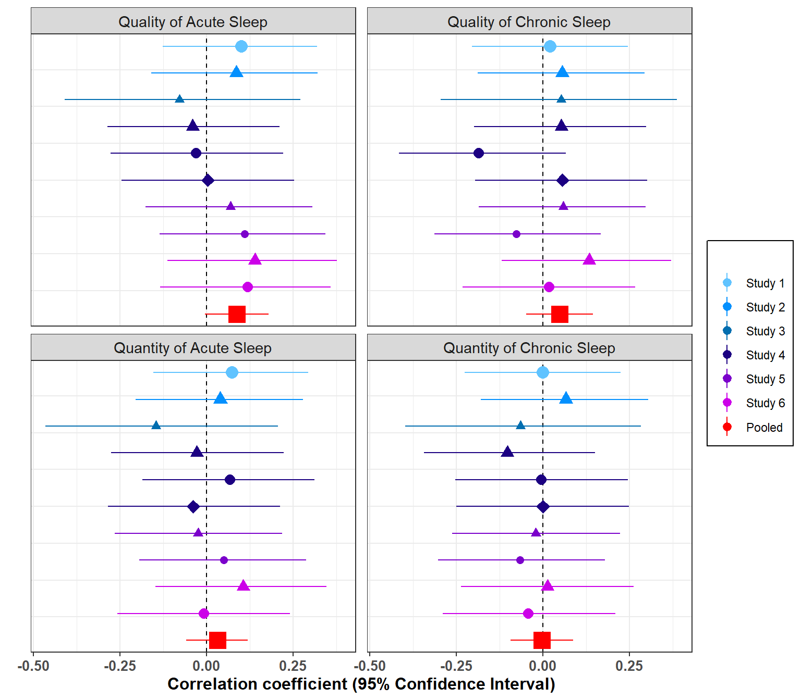

7 Primary Meta-analysis
7.1 Functions performing data analysis and facilitating data reporting**
Function performing correlations (depending on the study)
CorS1<-function(x){
cor(dplyr::select(x,
Moral_DIL,
SleepQualAcu,
SleepQualCro,
SleepQuantAcu,
SleepQuantCro))}
CorS2S3<-function(x){
cor(dplyr::select(x,
Moral_SCA,
SleepQualAcu,
SleepQualCro,
SleepQuantAcu,
SleepQuantCro))}
CorS4<-function(x){
cor(dplyr::select(x,
Moral_DIL,
Moral_SCA,
Moral_CAR,
SleepQualAcu,
SleepQualCro,
SleepQuantAcu,
SleepQuantCro))}
CorS5S6<-function(x){
cor(dplyr::select(x,
Moral_DIL,
Moral_SCA,
SleepQualAcu,
SleepQualCro,
SleepQuantAcu,
SleepQuantCro))}
CorFUNCTION <- function(x) {
ifelse(unique(x$Study)==1,
COR <- CorS1(x),
ifelse(unique(x$Study) %in% c(2,3),
COR<- CorS2S3(x),
ifelse(unique(x$Study)==4,
COR<- CorS4(x),
ifelse(unique(x$Study) %in% c(5,6),
COR<- CorS5S6(x),
NA))))
COR}Function computing variance/covariance matrix based on the equation approach (Steiger, 1980). All the credit for this function should be given to Pr Wolfgang Viechtbauer.
rmat <- function(x, n, upper=TRUE, simplify=TRUE, rtoz=FALSE, data) {
if (inherits(x, "formula")) {
options(na.action = "na.pass")
if (missing(data))
stop("Must specify 'data' argument when 'x' is a formula.")
if (!is.data.frame(data))
data <- data.frame(data)
dat <- get_all_vars(x, data=data)
if (ncol(dat) != 4)
stop("Incorrect number of variables specified in formula.")
id <- dat[,4]
dat <- split(dat, id)
res <- list()
for (i in 1:length(dat)) {
ri <- dat[[i]][[1]]
var1 <- as.character(dat[[i]][[2]])
var2 <- as.character(dat[[i]][[3]])
vars <- sort(unique(c(var1, var2)))
R <- matrix(NA, nrow=length(vars), ncol=length(vars))
diag(R) <- 1
rownames(R) <- colnames(R) <- vars
for (j in 1:length(var1)) {
R[var1[j],var2[j]] <- R[var2[j],var1[j]] <- ri[j]
}
res[[i]] <- R
}
return(rmat(res, n=n, simplify=TRUE, rtoz=rtoz))
}
if (is.list(x)) {
k <- length(x)
if (length(x) != length(n))
stop("Argument 'n' must be of the same length as there are elements in 'x'.")
res <- list()
for (i in 1:k) {
res[[i]] <- rmat(x[[i]], n[i], upper=upper, rtoz=rtoz)
}
if (simplify) {
ki <- sapply(res, function(x) ifelse(is.null(x$dat), 0, nrow(x$dat)))
dat <- cbind(id=rep(1:k, times=ki), do.call(rbind, lapply(res, "[[", "dat")))
V <- bldiag(lapply(res[ki > 0], "[[", "V"))
rownames(V) <- colnames(V) <- unlist(lapply(res, function(x) rownames(x$V)))
return(list(dat=dat, V=V))
} else {
return(res)
}
}
if (!is.matrix(x))
stop("Argument 'x' must be a matrix (or list thereof).")
if (dim(x)[1] != dim(x)[2])
stop("Argument 'x' must be a square matrix (or list thereof).")
dimsx <- nrow(x)
dnames <- paste0("x", 1:dimsx)
### in case x has dimension names, use those
if (!is.null(rownames(x)))
dnames <- rownames(x)
if (!is.null(colnames(x)))
dnames <- colnames(x)
### in case x is a 1x1 (or 0x0) matrix, return nothing
if (dimsx <= 1L)
return(list(dat=NULL, V=NULL))
### make x symmetric, depending on whether we use upper or lower part
if (upper) {
x[lower.tri(x)] <- t(x)[lower.tri(x)]
} else {
x[upper.tri(x)] <- t(x)[upper.tri(x)]
}
### check if x is symmetric (can be skipped since x must now be symmetric)
#if (!isSymmetric(x))
# stop("x must be a symmetric matrix.")
### stack upper/lower triangular part of x into a column vector (this is always done column-wise!)
if (upper) {
ri <- cbind(x[upper.tri(x)])
} else {
ri <- cbind(x[lower.tri(x)])
}
### apply r-to-z transformation if requested
if (rtoz)
ri <- 1/2 * log((1 + ri)/(1 - ri))
### I and J are matrices with 1:dimsx for rows and columns, respectively
I <- matrix(1:dimsx, nrow=dimsx, ncol=dimsx)
J <- matrix(1:dimsx, nrow=dimsx, ncol=dimsx, byrow=TRUE)
### get upper/lower triangular elements of I and J
if (upper) {
I <- I[upper.tri(I)]
J <- J[upper.tri(J)]
} else {
I <- I[lower.tri(I)]
J <- J[lower.tri(J)]
}
### dimensions in V (must be dimsx*(dimsx-1)/2)
dimsV <- length(ri)
### set up V matrix
V <- matrix(NA, nrow=dimsV, ncol=dimsV)
for (ro in 1:dimsV) {
for (co in 1:dimsV) {
i <- I[ro]
j <- J[ro]
k <- I[co]
l <- J[co]
### Olkin & Finn (1995), equation 5, page 157
V[ro,co] <- 1/2 * x[i,j]*x[k,l] * (x[i,k]^2 + x[i,l]^2 + x[j,k]^2 + x[j,l]^2) +
x[i,k]*x[j,l] + x[i,l]*x[j,k] -
(x[i,j]*x[i,k]*x[i,l] + x[j,i]*x[j,k]*x[j,l] + x[k,i]*x[k,j]*x[k,l] + x[l,i]*x[l,j]*x[l,k])
### Steiger (1980), equation 2, page 245 (provides the same result - checked)
#V[ro,co] <- 1/2 * ((x[i,k] - x[i,j]*x[j,k]) * (x[j,l] - x[j,k]*x[k,l]) +
# (x[i,l] - x[i,k]*x[k,l]) * (x[j,k] - x[j,i]*x[i,k]) +
# (x[i,k] - x[i,l]*x[l,k]) * (x[j,l] - x[j,i]*x[i,l]) +
# (x[i,l] - x[i,j]*x[j,l]) * (x[j,k] - x[j,l]*x[l,k]))
### Steiger (1980), equation 11, page 247 for r-to-z transformed values
if (rtoz)
V[ro,co] <- V[ro,co] / ((1 - x[i,j]^2) * (1 - x[k,l]^2))
}
}
### divide V by (n-1) for raw correlations and by (n-3) for r-to-z transformed correlations
if (rtoz) {
V <- V/(n-3)
} else {
V <- V/(n-1)
}
### create matrix with var1 and var2 names and sort rowwise
dmat <- cbind(dnames[I], dnames[J])
dmat <- t(apply(dmat, 1, sort))
### set row/column names for V
var1var2 <- paste0(dmat[,1], ".", dmat[,2])
rownames(V) <- colnames(V) <- var1var2
return(list(dat=data.frame(yi=ri, var1=dmat[,1], var2=dmat[,2], var1var2=var1var2, stringsAsFactors=FALSE), V=V))
}Function computing the correlation and variance/covariance matrix while converting Pearson’s r to Fisher’s Z
RmatFUNCTION<-function(x,y){
rmat(x, n=y, rtoz=TRUE)}Function extracting adjusted confidence intervals for correlations
CorCIFUNCTION<-function(x,y){
CorCI(x,y, conf.level = (1-(0.05/4)))
}Function extracting critical information from meta analyses (performed using metafor)
ExtractMetaFUNCTION<-function(x){
cbind(
Raw.r=FisherZInv(as.numeric(as.character(x$b))),
p.val=as.numeric(as.character(x$pval)),
Adj.p.val=as.numeric(as.character(x$pval))*4,
Adj.CIlow=FisherZInv(x$ci.lb),
Adj.CIup=FisherZInv(x$ci.ub),
TOST1=abs(FisherZInv(as.numeric(as.character(x$b))-as.numeric(as.character(x$se*qnorm(1-2*(0.05/(2*4))))))),
TOST2=abs(FisherZInv(as.numeric(as.character(x$b))+as.numeric(as.character(x$se*qnorm(1-2*(0.05/(2*4))))))),
Cochran.Q=x$QE,
Cochran.Q.p.val=x$QEp)
}Function extracting critical information about heterogeneity
# x is the rma object and y the variance covariance matrix
ExtractHeterogeneityFUNCTION<-function(x, y){
W<-solve(y)
X<-model.matrix(x)
P <- W - W %*% X %*% solve(t(X) %*% W %*% X) %*% t(X) %*% W
cbind(
stud.out=as.character(data.frame(x$g.levels.k)[,1]),
N=data.frame(x$g.levels.k)[,2],
Tau.sq=x$tau2,
Tau=sqrt(x$tau2),
Cochran.Q=x$QE,
Cochran.Q.p.val=x$QEp,
I.sq=100 *x$tau2 / (x$tau2 + (x$k-x$p)/sum(diag(P))))
}Functions selecting appropriate data in the correlation or variance/covariance matrix (i.e., information regarding only the relationship between sleep and moral outcomes and not those regarding - for example - the relationship between 2 sleep indicators)
FourPredictFUNCTION<-function(x){
x[str_detect(row.names(x), "Sleep") & str_detect(row.names(x), "Moral"),
str_detect(colnames(x), "Sleep") & str_detect(colnames(x), "Moral")]}
QualAcuPredictFUNCTION<-function(x){
x[str_detect(row.names(x), "SleepQualAcu") & str_detect(row.names(x), "Moral"),
str_detect(colnames(x), "SleepQualAcu") & str_detect(colnames(x), "Moral")]}
QualCroPredictFUNCTION<-function(x){
x[str_detect(row.names(x), "SleepQualCro") & str_detect(row.names(x), "Moral"),
str_detect(colnames(x), "SleepQualCro") & str_detect(colnames(x), "Moral")]}
QuantAcuPredictFUNCTION<-function(x){
x[str_detect(row.names(x), "SleepQuantAcu") & str_detect(row.names(x), "Moral"),
str_detect(colnames(x), "SleepQuantAcu") & str_detect(colnames(x), "Moral")]}
QuantCroPredictFUNCTION<-function(x){
x[str_detect(row.names(x), "SleepQuantCro") & str_detect(row.names(x), "Moral"),
str_detect(colnames(x), "SleepQuantCro") & str_detect(colnames(x), "Moral")]} 7.2 Primary Analysis
Multivariate random effects meta analysis (var-covar matrix estimated using equation based approach)
Preparation of the general dataset. We split the large dataset including the 6 studies as required by most of the functions of the apply family
Data_Meta_Raw.wide.split<-split(Data_Meta_Raw.wide, Data_Meta_Raw.wide$Study)Obtaining sample size for each dataset (here, it is equal to the number of rows since we have evicted participants not retained in final analyses (i.e., those with missing values or incorrect attentional check)
N.prim<-sapply(Data_Meta_Raw.wide.split, nrow)Obtention of Correlation matrix and Variance-Covariance matrix for each study
Cor.matrix.prim<-lapply(Data_Meta_Raw.wide.split, CorFUNCTION)
List.Cor.Varcovar.prim<-mapply(RmatFUNCTION, Cor.matrix.prim, N.prim, SIMPLIFY=FALSE)Performing multivariate meta analysis
# Correlation (Fisher's z) between all sleep indicators and all outcomes for each study
ES.prim_transit<-do.call(rbind, lapply(List.Cor.Varcovar.prim, function(x) x$dat))
ES.prim_transit1<-data.frame(cbind(
stud.out=row.names(ES.prim_transit), ES.prim_transit))
ES.prim_transit2<-separate(ES.prim_transit1, stud.out,
into=c("Study"))## Warning: Expected 1 pieces. Additional pieces discarded in 81 rows [1, 2, 3, 4,
## 5, 6, 7, 8, 9, 10, 11, 12, 13, 14, 15, 16, 17, 18, 19, 20, ...].# Here, we delete all correlations not regarding sleep-moral outcomes relationship (k=40)
ES.Prim<-ES.prim_transit2 %>%
rename("Outcome"=var1,
"Predictor"=var2,
"Out.Pred"=var1var2) %>%
mutate(
Asso.of.int=case_when(
str_detect(Outcome, "Sleep") & str_detect(Predictor, "Moral") ~ 1,
str_detect(Outcome, "Moral") & str_detect(Predictor, "Sleep") ~ 1)) %>%
filter(Asso.of.int==1)
ES.Prim$N<-rep(N.prim, c(1*4,1*4,1*4,3*4,2*4,2*4))
ES.Prim$ES.ID<-1:nrow(ES.Prim)
#Variance-covariance matrix for each study (N=6)
List.Varcovar.prim_transit1<-lapply(List.Cor.Varcovar.prim, function(x) x$V)
# we apply the fourpredictfunction to keep only associations of interest
List.Varcovar.prim<-lapply(List.Varcovar.prim_transit1, FourPredictFUNCTION)
V.Prim=bldiag(list(
List.Varcovar.prim[[1]],
List.Varcovar.prim[[2]],
List.Varcovar.prim[[3]],
List.Varcovar.prim[[4]],
List.Varcovar.prim[[5]],
List.Varcovar.prim[[6]]))
# Primary analysis investigated with an unstructured variance structure: leads to convergence issues
#Error in rma.mv(yi, V.Prim, mods = ~Predictor - 1, random = ~Out.Pred | :
# Optimizer (nlminb) did not achieve convergence (convergence = 1).
# Meta.Prim<-rma.mv(yi,V.Prim,
# mods=~Predictor-1,
# random = ~ Out.Pred | Study,
# struct="UN",
# data=ES.Prim, level=100-(5/4))
# We simplified the structure by requesting a HCS structure
# We correct the 95%CI with a bonferroni procedure due to the 4 assessments of our hypothesis
Meta.Prim<-rma.mv(yi,V.Prim,
mods=~Predictor-1,
random = ~ Out.Pred | Study,
struct="HCS",
data=ES.Prim, level=100-(5/4))7.3 Summary of the results of the primary meta-analysis and of the individual studies
#individual studies
ES.Prim$Raw.r<-FisherZInv(ES.Prim$yi)
df.ES.Prim<-data.frame(cbind(
ES.Prim,
t(apply(ES.Prim[,c('Raw.r','N')], 1,
function(x) CorCIFUNCTION(x[1], x[2])))[,c('lwr.ci','upr.ci')]))
colnames(df.ES.Prim)[c(4, 10:11)] <- c("SleepIndicator", "Adj.CIlow", "Adj.CIup")
#Meta-analyses
df.Meta.Res1.Prim<-as.data.frame(ExtractMetaFUNCTION(Meta.Prim))
df.Meta.Prim<- df.Meta.Res1.Prim %>%
dplyr::mutate(
Study="Pooled Effect Size",
Outcome="All outcomes",
SleepIndicator=c("Quality of Acute Sleep", "Quality of Chronic Sleep",
"Quantity of Acute Sleep","Quantity of Chronic Sleep"),
Adj.p.val=case_when(
Adj.p.val>.99~.99,
Adj.p.val<=.99~Adj.p.val),
N=sum(N.prim)) %>%
rowwise() %>%
dplyr::mutate(TOST=max(TOST1, TOST2)) %>%
dplyr::select(-c(TOST1,TOST2))
df.Meta.Prim<-df.Meta.Prim[,c(8:11,1:7,12)]
df.Results.Prim<-data.frame(bind_rows(df.Meta.Prim, df.ES.Prim)[,-c(13:15)])
df.Results.Prim$Outcome<-dplyr::recode(df.Results.Prim$Outcome,
Moral_DIL="Dilemmas",
Moral_SCA="Scale",
Moral_CAR="Autonomous.Cars")
df.Results.Prim$SleepIndicator<-dplyr::recode(df.Results.Prim$SleepIndicator,
SleepQualAcu="Quality of Acute Sleep",
SleepQualCro="Quality of Chronic Sleep",
SleepQuantAcu="Quantity of Acute Sleep",
SleepQuantCro="Quantity of Chronic Sleep")
#Summary of the meta analysis
gt(df.Results.Prim[1:4,])%>%
fmt_number(
columns = 5:12,
decimals = 3)| Study | Outcome | SleepIndicator | N | Raw.r | p.val | Adj.p.val | Adj.CIlow | Adj.CIup | Cochran.Q | Cochran.Q.p.val | TOST | ES.ID |
|---|---|---|---|---|---|---|---|---|---|---|---|---|
| Pooled Effect Size | All outcomes | Quality of Acute Sleep | 582 | 0.088 | 0.018 | 0.072 | −0.005 | 0.179 | 24.200 | 0.933 | 0.170 | NA |
| Pooled Effect Size | All outcomes | Quality of Chronic Sleep | 582 | 0.049 | 0.208 | 0.832 | −0.048 | 0.145 | 24.200 | 0.933 | 0.135 | NA |
| Pooled Effect Size | All outcomes | Quantity of Acute Sleep | 582 | 0.031 | 0.384 | 0.990 | −0.058 | 0.120 | 24.200 | 0.933 | 0.111 | NA |
| Pooled Effect Size | All outcomes | Quantity of Chronic Sleep | 582 | −0.003 | 0.944 | 0.990 | −0.093 | 0.088 | 24.200 | 0.933 | 0.084 | NA |
#Summary of the primary studies
gt(df.Results.Prim[5:nrow(df.Results.Prim),c(1:5,8:9)]) %>%
fmt_number(
columns = 5:7,
decimals = 3)| Study | Outcome | SleepIndicator | N | Raw.r | Adj.CIlow | Adj.CIup |
|---|---|---|---|---|---|---|
| 1 | Dilemmas | Quality of Acute Sleep | 122 | 0.101 | −0.127 | 0.319 |
| 1 | Dilemmas | Quality of Chronic Sleep | 122 | 0.021 | −0.205 | 0.245 |
| 1 | Dilemmas | Quantity of Acute Sleep | 122 | 0.074 | −0.153 | 0.294 |
| 1 | Dilemmas | Quantity of Chronic Sleep | 122 | −0.000 | −0.225 | 0.225 |
| 2 | Scale | Quality of Acute Sleep | 105 | 0.086 | −0.160 | 0.322 |
| 2 | Scale | Quality of Chronic Sleep | 105 | 0.056 | −0.189 | 0.295 |
| 2 | Scale | Quantity of Acute Sleep | 105 | 0.040 | −0.204 | 0.280 |
| 2 | Scale | Quantity of Chronic Sleep | 105 | 0.066 | −0.179 | 0.304 |
| 3 | Scale | Quality of Acute Sleep | 52 | −0.079 | −0.410 | 0.271 |
| 3 | Scale | Quality of Chronic Sleep | 52 | 0.053 | −0.295 | 0.388 |
| 3 | Scale | Quantity of Acute Sleep | 52 | −0.147 | −0.466 | 0.206 |
| 3 | Scale | Quantity of Chronic Sleep | 52 | −0.065 | −0.398 | 0.284 |
| 4 | Dilemmas | Quality of Acute Sleep | 99 | −0.030 | −0.277 | 0.222 |
| 4 | Scale | Quality of Acute Sleep | 99 | −0.040 | −0.287 | 0.211 |
| 4 | Autonomous.Cars | Quality of Acute Sleep | 99 | 0.003 | −0.246 | 0.253 |
| 4 | Dilemmas | Quality of Chronic Sleep | 99 | −0.186 | −0.416 | 0.067 |
| 4 | Scale | Quality of Chronic Sleep | 99 | 0.053 | −0.199 | 0.299 |
| 4 | Autonomous.Cars | Quality of Chronic Sleep | 99 | 0.057 | −0.196 | 0.302 |
| 4 | Dilemmas | Quantity of Acute Sleep | 99 | 0.067 | −0.185 | 0.312 |
| 4 | Scale | Quantity of Acute Sleep | 99 | −0.028 | −0.276 | 0.223 |
| 4 | Autonomous.Cars | Quantity of Acute Sleep | 99 | −0.038 | −0.285 | 0.213 |
| 4 | Dilemmas | Quantity of Chronic Sleep | 99 | −0.004 | −0.253 | 0.246 |
| 4 | Scale | Quantity of Chronic Sleep | 99 | −0.103 | −0.344 | 0.150 |
| 4 | Autonomous.Cars | Quantity of Chronic Sleep | 99 | −0.000 | −0.250 | 0.249 |
| 5 | Dilemmas | Quality of Acute Sleep | 105 | 0.110 | −0.136 | 0.344 |
| 5 | Scale | Quality of Acute Sleep | 105 | 0.069 | −0.176 | 0.307 |
| 5 | Dilemmas | Quality of Chronic Sleep | 105 | −0.078 | −0.314 | 0.168 |
| 5 | Scale | Quality of Chronic Sleep | 105 | 0.059 | −0.186 | 0.297 |
| 5 | Dilemmas | Quantity of Acute Sleep | 105 | 0.050 | −0.195 | 0.289 |
| 5 | Scale | Quantity of Acute Sleep | 105 | −0.025 | −0.265 | 0.219 |
| 5 | Dilemmas | Quantity of Chronic Sleep | 105 | −0.066 | −0.304 | 0.179 |
| 5 | Scale | Quantity of Chronic Sleep | 105 | −0.021 | −0.262 | 0.223 |
| 6 | Dilemmas | Quality of Acute Sleep | 99 | 0.119 | −0.134 | 0.358 |
| 6 | Scale | Quality of Acute Sleep | 99 | 0.140 | −0.113 | 0.376 |
| 6 | Dilemmas | Quality of Chronic Sleep | 99 | 0.018 | −0.232 | 0.266 |
| 6 | Scale | Quality of Chronic Sleep | 99 | 0.134 | −0.119 | 0.371 |
| 6 | Dilemmas | Quantity of Acute Sleep | 99 | −0.008 | −0.257 | 0.242 |
| 6 | Scale | Quantity of Acute Sleep | 99 | 0.106 | −0.147 | 0.346 |
| 6 | Dilemmas | Quantity of Chronic Sleep | 99 | −0.042 | −0.289 | 0.210 |
| 6 | Scale | Quantity of Chronic Sleep | 99 | 0.013 | −0.237 | 0.262 |
7.4 Heterogeneity
Heterogeneity.Prim<-as.data.frame(ExtractHeterogeneityFUNCTION(Meta.Prim, V.Prim))
Heterogeneity.Prim2<-data.frame(apply(Heterogeneity.Prim[,3:7], 2, function(x) as.numeric(as.character(x))))
gt(cbind(Heterogeneity.Prim[,1:2], Heterogeneity.Prim2)) %>%
fmt_number(
columns = 3:7,
decimals = 3)| stud.out | N | Tau.sq | Tau | Cochran.Q | Cochran.Q.p.val | I.sq |
|---|---|---|---|---|---|---|
| Moral_CAR.SleepQualAcu | 1 | 0.002 | 0.046 | 24.200 | 0.933 | 31.093 |
| Moral_CAR.SleepQualCro | 1 | 0.000 | 0.000 | 24.200 | 0.933 | 0.000 |
| Moral_CAR.SleepQuantAcu | 1 | 0.002 | 0.043 | 24.200 | 0.933 | 27.733 |
| Moral_CAR.SleepQuantCro | 1 | 0.000 | 0.000 | 24.200 | 0.933 | 0.000 |
| Moral_DIL.SleepQualAcu | 4 | 0.003 | 0.050 | 24.200 | 0.933 | 34.529 |
| Moral_DIL.SleepQualCro | 4 | 0.015 | 0.123 | 24.200 | 0.933 | 76.077 |
| Moral_DIL.SleepQuantAcu | 4 | 0.000 | 0.000 | 24.200 | 0.933 | 0.000 |
| Moral_DIL.SleepQuantCro | 4 | 0.000 | 0.021 | 24.200 | 0.933 | 8.564 |
| Moral_SCA.SleepQualAcu | 5 | 0.002 | 0.048 | 24.200 | 0.933 | 33.085 |
| Moral_SCA.SleepQualCro | 5 | 0.000 | 0.001 | 24.200 | 0.933 | 0.034 |
| Moral_SCA.SleepQuantAcu | 5 | 0.001 | 0.037 | 24.200 | 0.933 | 22.628 |
| Moral_SCA.SleepQuantCro | 5 | 0.003 | 0.051 | 24.200 | 0.933 | 35.546 |
#Overall heterogeneity is low. The highest heterogeneity is found for the association between moral dilemmas and chronic sleep quality. Despite this, effect sizes remained systematically low.
gt(df.Results.Prim[df.Results.Prim$Outcome=="Dilemmas" & df.Results.Prim$SleepIndicator=="Quality of Chronic Sleep",])| Study | Outcome | SleepIndicator | N | Raw.r | p.val | Adj.p.val | Adj.CIlow | Adj.CIup | Cochran.Q | Cochran.Q.p.val | TOST | ES.ID |
|---|---|---|---|---|---|---|---|---|---|---|---|---|
| 1 | Dilemmas | Quality of Chronic Sleep | 122 | 0.02118691 | NA | NA | -0.2048351 | 0.24506377 | NA | NA | NA | 2 |
| 4 | Dilemmas | Quality of Chronic Sleep | 99 | -0.18580935 | NA | NA | -0.4160570 | 0.06682812 | NA | NA | NA | 16 |
| 5 | Dilemmas | Quality of Chronic Sleep | 105 | -0.07752629 | NA | NA | -0.3140136 | 0.16801910 | NA | NA | NA | 27 |
| 6 | Dilemmas | Quality of Chronic Sleep | 99 | 0.01810028 | NA | NA | -0.2324887 | 0.26643573 | NA | NA | NA | 35 |
7.5 Plot of the primary meta-analysis results
we scaled the size of the dots of each study by the inverse of its variance
df.graph.prim<-df.Results.Prim
df.graph.prim$Study<- factor(df.graph.prim$Study)
df.graph.prim$Study <- factor(df.graph.prim$Study,
levels=rev(levels(df.graph.prim$Study)))
var.studies<-1/(c(unique(round((Meta.Prim$vi), digits=4))[1:5], unique(round((Meta.Prim$vi), digits=4))[4]))
p<-ggplot(data=df.graph.prim)+
geom_hline(yintercept =0, linetype=2)+
geom_point(aes(x = Study, y = Raw.r, shape=Outcome,
colour=Study, fill=Study, size=Study),
position=position_dodge2(width=8))+
geom_pointrange(position=position_dodge2(width=8),
aes(x = Study, y = Raw.r,
ymin = Adj.CIlow, ymax = Adj.CIup, shape=Outcome,
linetype=Study, colour=Study, fill=Study))+
xlab('')+ ylab("Correlation coefficient (95% Confidence Interval)")+
facet_wrap(~SleepIndicator,
strip.position="top",
ncol=2, nrow=2,scales = "free_y") +
coord_flip()+
theme_bw() +
theme(legend.position="right",
# plot.margin = unit(c(0.1, 0.1, 0.1, 0.1), "cm"),
axis.text.y=element_blank(),
axis.ticks.y=element_blank(),
axis.text.x=element_text(size=10, face="bold"),
axis.title.y=element_text(size=12,face="bold"),
axis.title.x=element_text(size=12,face="bold"),
strip.text.x = element_text(hjust=0.5,vjust =0.5,angle=0,
size=11),
legend.background = element_rect(size=0.5, linetype="solid",
colour ="black"),
legend.box = "vertical")+
#legend.title = element_text(size=10, face="bold"),
# legend.position = "none")+
#panel.spacing.x = unit(2.5, "cm"),
scale_linetype_manual(values=c("solid", rep("solid",each=10)))+#longdash
scale_shape_manual(name="",
values=c(22, 23, 16,17),
guide=guide_legend(reverse=T)) +
scale_color_manual(
values = c("red",
"#CC00E8",
"#7B00CB",
"#1C0082",
"#016EB0",
"#0390FE",
"#60C3FF"),
name="",
labels=c("Pooled",
"Study 6",
"Study 5",
"Study 4",
"Study 3",
"Study 2",
"Study 1"),
guide=guide_legend(reverse=T)) +
scale_fill_manual(
values = c("red",
"#CC00E8",
"#7B00CB",
"#1C0082",
"#016EB0",
"#0390FE",
"#60C3FF"),
name="",
guide=guide_legend(reverse=T)) + #+
scale_size_manual(values=c(6,rev(var.studies/30)))#c(1, rep(4, 6))
p+guides( shape=FALSE,fill = FALSE, size=FALSE,linetype=FALSE)### Warning: Removed 8 rows containing missing values (geom_point).